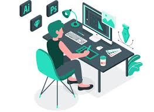

Hi, I'm GAJJALA NIHARIKA, a passionate front end developer.

INTRODUCTION
HI THERE !
I'M GAJJALA NIHARIKA
I am currently a third-year student at IIIT RGUKT, pursuing a Bachelor of Technology (BTech) with a specialization in the core branch of Computer Science and Engineering (CSE). My journey at IIIT has been both thrilling and enlightening, offering me numerous opportunities for personal and academic growth. Through rigorous coursework and hands-on projects, I have honed my skills in various areas of computer science, including algorithms, data structures, software engineering, and machine learning. My passion for technology and innovation drives me to continually seek out new challenges and expand my knowledge base. With a current CGPA of 8.6, I am proud of my academic achievements and remain dedicated to excelling in my field. As I continue my education, I look forward to further exploring the vast and dynamic landscape of computer science, striving to make meaningful contributions to the ever-evolving world of technology.
BIOGRAPHY
I'm NIHARIKA, a 20-year-old third-year B.Tech student at IIITRGUKT University, my journey in technology started early and has been fueled by a deep passion for coding and innovation.
I completed my Intermediate education at IIITRGUKT, where I excelled in Math and Science, securing a 98% aggregate. Prior to that, I graduated from ZPHG School with a 100% in my tenth standard, demonstrating a strong foundation in the core subjects that laid the groundwork for my current pursuits.
Throughout my academic career at IIT University, I have maintained a 8.6GPA, consistently demostrating academic excellence. I have been recognized on the Dean’s List for three consecutive years
Beyond the classroom, I am actively involved in various tech clubs and organizations on campus. As the President of the Coding Club, I lead a team of enthusiastic developers, organizing hackathons, coding boot camps, and workshops. These experiences have honed my leadership, teamwork, and project management skills.
My professional experience includes a summer internship at Elfinity Tech, where I worked as Frontend developer that improved user engagement by 20%.
In my free time, I enjoy working on personal projects and contributing to open-source communities. Some of my notable projects include a transport company computerization and a stocks registration website,
which are available on my GitHub. I am also a passionate gamer and enjoy exploring AI and machine learning algorithms to create intelligent game bots.
Looking ahead, I am excited about the prospects of specializing in Full Stack Web Developer. My goal is to pursue a master’s degree and eventually work as a software engineer in a leading tech company,
where I can innovate and solve real-world problems through technology.
Feel free to explore my portfolio to see my projects, coding tutorials, and blog posts. Let's connect and collaborate on exciting tech ventures!
As a front-end developer, I've been instrumental in computerizing transport companies, focusing on modern interfaces. My role includes designing intuitive and visually appealing user interfaces, integrating real-time tracking and interactive mapping features for enhanced logistics operations, and ensuring alignment with business objectives. I prioritize performance optimization and accessibility compliance, resulting in interfaces that are both visually engaging and accessible to all users. I remain committed to continuous learning to drive innovation in transport company computerization.
technologiesused:java,Html,css,javascript
STOCKS REGISTRATIONS
As a dedicated web developer, I possess extensive experience in crafting dynamic and user-centric websites. Proficient in front-end development technologies including HTML, CSS, and JavaScript, I excel in creating visually appealing and responsive interfaces that prioritize usability and accessibility. Leveraging frameworks and libraries such as Bootstrap, jQuery, and React.js, I streamline development processes while ensuring cross-browser compatibility and optimal performance across various devices. My expertise extends to back-end integration, where I seamlessly connect front-end interfaces with back-end systems using RESTful APIs, enabling dynamic functionality and data exchange. With a keen eye for design and a commitment to continuous learning, I am well-equipped to deliver innovative web solutions that exceed client expectations and drive business growth.
technologies used: HTMl ,css,Reactjs,javascript
EXPERIENCE
i am working as intern at Elifinty Company, I had the invaluable opportunity to gain hands-on experience in various aspects of front end developr. Collaborating closely with experienced professionals, I contributed to developing software solutions, analyzing market trends, creating marketing campaigns]. This immersive experience allowed me to apply theoretical knowledge gained through coursework to real-world scenarios, honing my [mention relevant skills, e.g., problem-solving abilities, communication skills, technical expertise]. Additionally, I actively participated in team meetings, workshops, and training sessions, further enhancing my understanding of industry best practices and emerging trends. My internship at Elifinty Company was instrumental in shaping my career aspirations and providing me with a solid foundation for future endeavors.
EDUCATION
BTECH
I am pursuing a B.Tech in Computer Science and Engineering, specializing in web development. I have mastered HTML, CSS, and JavaScript for front-end development and am proficient in back-end languages like Node.js and Python. I have experience with both SQL (MySQL, PostgreSQL) and NoSQL (MongoDB) databases and understand RESTful APIs. My portfolio includes projects ranging from personal websites to complex applications. I continuously improve my skills through online courses and community engagement. I aspire to be a full-stack developer, leveraging my comprehensive skills to create robust web applications.
PUC
have completed my intermediate education in the MPC (Mathematics, Physics, and Chemistry)
TENTH STANDARD
I have completed my tength standard in ZPHS school , secured 10 cgpa